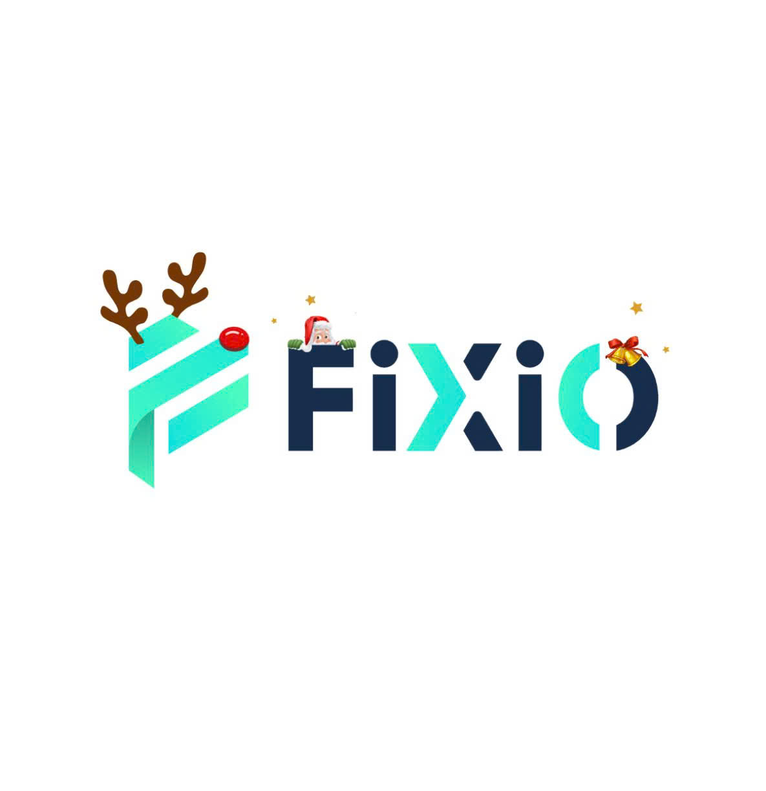
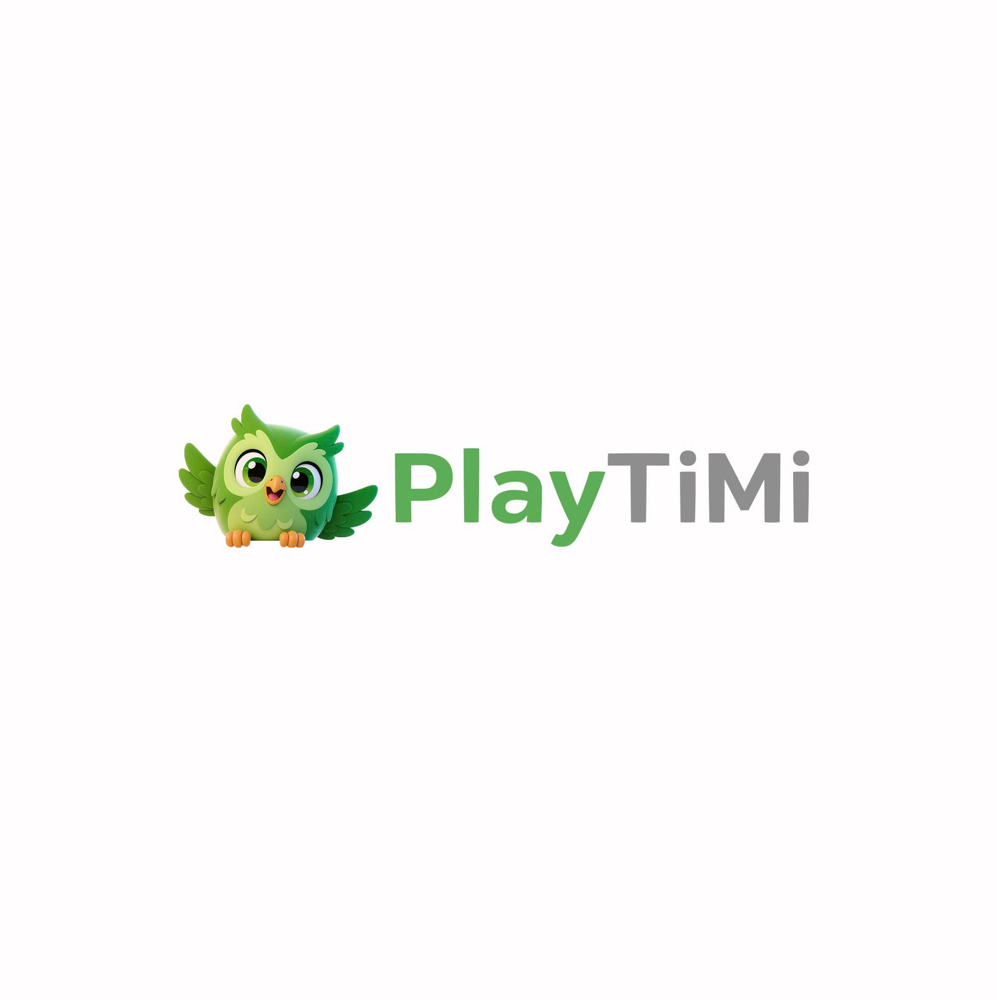

Content Strategy
Develop and adapt content based on audience insights, trends, and communication goals to improve reach and engagement
PORTFOLIO
A little about me
I have over 2 years of experience in social media, content
marketing, website management, design, and video editing. I have
been involved in developing and managing content across multiple
platforms including TikTok, Facebook, Instagram, X, and YouTube.
I am skilled in analyzing audience insights, optimizing content
based on communication goals, and creating suitable content to
improve reach and engagement. I also proactively keep up with
trends, technologies, and AI tools to enhance workflow efficiency
and content quality.
In addition, I am familiar with tools such as Figma, Cursor, and
AI-assisted workflows to design, edit, and build basic landing
pages for marketing and digital communication purposes.

Develop and adapt content based on audience insights, trends, and communication goals to improve reach and engagement
Monitor content performance and optimize content flexibly based on data, user behavior, and engagement across digital platforms
Leverage AI tools and design/coding support tools to optimize content production workflows, improve efficiency, and enhance content quality


Thiết kế bộ banner truyền thông nội bộ tập trung vào nhận diện rủi ro và chuẩn hành vi an toàn.
View ProjectBanner social đa định dạng với thông điệp ngắn gọn, CTA rõ ràng và visual tập trung vào hành động.
View ProjectChuỗi banner thông tin cho sự kiện, đồng bộ nhận diện thương hiệu và hỗ trợ điều hướng nội dung tại điểm chạm.
View ProjectBộ banner giáo dục cộng đồng theo hướng infographic, tăng độ dễ đọc và khả năng ghi nhớ thông tin.
View ProjectThiết kế proposal theo hướng premium, nhấn mạnh giá trị giải pháp và trình bày logic từng điểm chạm khách hàng.
Thiết kế email campaign thân thiện mobile, cấu trúc nội dung rõ ràng và tối ưu tỷ lệ nhấp theo từng CTA.
Chuỗi email nuôi dưỡng khách hàng kết hợp thông tin sản phẩm và social proof để tăng chuyển đổi giai đoạn consideration.
Chuỗi landing page được thiết kế nhằm thử nghiệm nhiều visual direction và cách trình bày CTA khác nhau trên cùng một nội dung cốt lõi. Tập trung vào khả năng thu hút người xem, tối ưu bố cục thông tin và tăng tỷ lệ chuyển đổi thông qua hình ảnh, màu sắc và hành vi người dùng trên landing page.
View Full Landing Case


Bộ logo được thiết kế theo 3 định hướng thương hiệu khác nhau nhưng cùng mục tiêu: tăng nhận diện, dễ ghi nhớ và ứng dụng linh hoạt trên digital assets.
All images in the template are AI-generated, and the template itself was manually created for the customer.
Chuỗi AI video được thực hiện nhằm thử nghiệm khả năng storytelling, visual hook và mức độ giữ chân người xem trên nền tảng short-form content. Nội dung xoay quanh hình tượng chú mèo với phong cách hài hước, đáng yêu và gần gũi, kết hợp cùng các tình huống mang tính giải trí và thông điệp tích cực nhằm tăng khả năng viral và tương tác trên social media
Case triển khai thị trường Nhật Bản gồm visual social và kênh phân phối nội dung, tập trung tăng độ tin cậy thương hiệu và chuyển đổi người xem thành lead chất lượng.
Chuỗi nội dung social cho ngành điện lực tập trung vào an toàn vận hành, tiết kiệm năng lượng và tăng tương tác cộng đồng bằng thông điệp ngắn gọn, dễ hiểu.
Chuỗi nội dung văn hóa - giáo dục tập trung vào kể chuyện hình ảnh, truyền tải kiến thức theo cách trực quan để tăng mức độ tiếp nhận và chia sẻ tự nhiên từ cộng đồng.
Chuỗi nội dung SEO về Forex và tài chính được xây dựng theo hướng tối ưu tìm kiếm, kết hợp giữa thông tin thị trường, xu hướng kinh tế và visual trực quan nhằm tăng khả năng tiếp cận và giữ chân người đọc.
Chuỗi nội dung personal branding tập trung vào góc nhìn kinh doanh, chiến lược thương hiệu và bài học thực tiễn, được triển khai theo hướng storytelling nhằm tăng độ nhận diện, mức độ tin cậy và tương tác trên social media.
As Steve Jobs once said, “Great things in business are never done by one person, they’re done by a team of people.” I hope we have the opportunity to collaborate and create something extraordinary together.